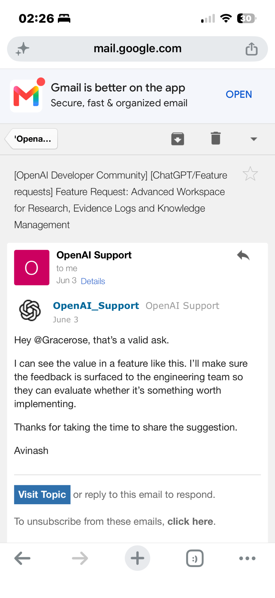
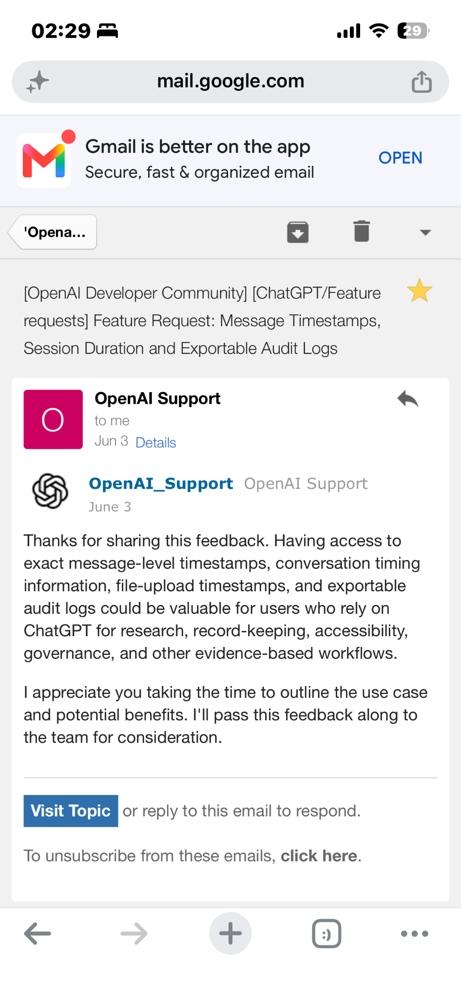
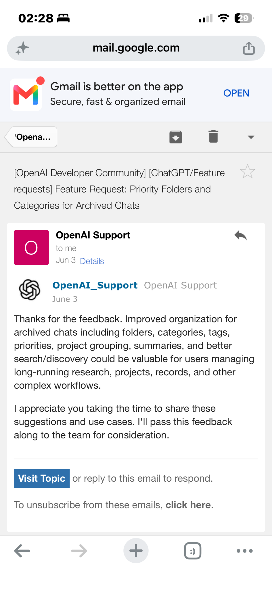
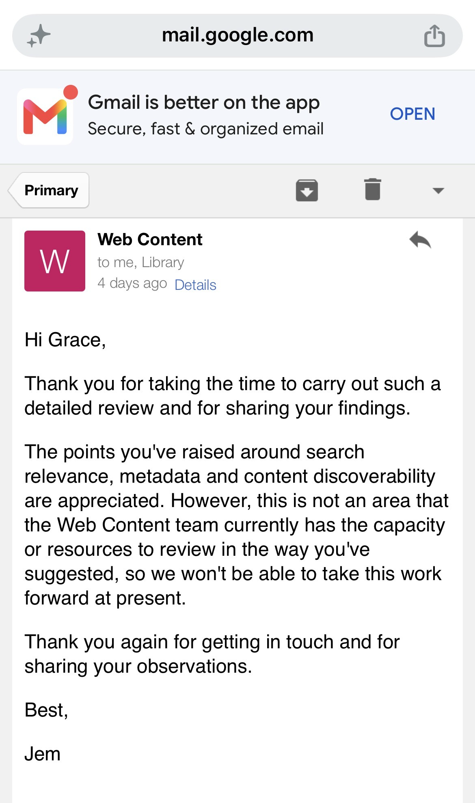

Recognition & Acknowledgements
A record of contribution, recognition, advocacy and service that conventional job titles do not always capture: endorsements, institutional thanks, mentoring, civic work, research labour, technical problem-solving and the documented trail of work undertaken behind the scenes.
Professional, educational & community contribution
My wider development and service have included fellowship activity, technology-community participation, mentoring through Coding Black Females, guidance on university basketball coaching, and negotiation around a proposed Cambridge University training arrangement. These sit alongside formal employment and contract work rather than being treated as invisible extras.
The purpose of this section is to preserve evidence of responsibility, trust and contribution that may otherwise disappear when a role is temporary, voluntary, cross-functional or performed outside a formal job description.
Recommendations & acknowledgements
This record includes professional references, LinkedIn recommendations, client or stakeholder thanks, academic or managerial feedback, repeat invitations, and messages recognising judgement, reliability, teaching, technical support or contribution.
Only material that is already public, permissioned, or suitable to quote responsibly is reproduced. Private correspondence is summarised rather than published wholesale.
Advocacy and institutional engagement
Public-interest work includes representations to elected representatives, public bodies and institutions on issues such as transport access, social care, education, administrative fairness, public-service accountability and participation in civic life.
Entries are recorded using a simple trail: issue → action → recipient → response → outcome → status. This keeps the record useful without claiming personal causation where an outcome had multiple influences.
Often-unseen labour
Some of the most consequential work in professional, civic and research settings is preparatory rather than publicly credited. This section makes that labour visible without automatically claiming ownership of later decisions or outcomes.
Where later developments resemble or build on earlier contributions, the record will distinguish what can be demonstrated — dates, documents, messages, introductions or source provenance — from influence that is only possible or probable.
- Independent research, source discovery and curation
- Drafting, fact-checking and preparing material for others
- Technical troubleshooting and process documentation
- Mentoring, teaching, coaching and knowledge transfer
- Institutional navigation and persistence across fragmented systems
- Preserving family, professional and public-source records
- Introducing questions, frameworks or sources before they become widely discussed
Contract work within a changing labour market
Several of my temporary and agency-mediated roles occurred inside labour-market changes that are independently documented. UK parliamentary records show that by the early 2000s financial services, back-office processing and IT services were already being moved offshore, particularly to India. Contemporary evidence named J.P. Morgan Chase among firms with announced projects and described Barclays as implementing or planning offshoring arrangements. My later assignments at those institutions therefore sit within a documented restructuring trend rather than an isolated personal pattern.
The timing also matters after 2008. ONS data show that although temporary employment did not rise continuously across the whole economy, the proportion of temporary workers who said they could not find permanent work rose from 25.8% in 2008 to 39.8% in 2012. By the time of my later enterprise-technology assignments, real-wage progression remained historically weak; later agency work at L'Oréal through Adecco and education work through Teaching Personnel provide further biographical examples of intermediary employment structures.
This material is recorded as historical context and chronological alignment. Where a dated contribution of mine precedes a similar institutional development, the chronology can support a research lead; stronger attribution is added when a source identifies the contribution itself. See the full labour-market and generational evidence timeline →
Mapping the route from concern to change
Institutional change is often cumulative. Similar concerns can arise in several places, travel through supervisors, committees, technical reports, professional networks or employee groups, and later reach executive or public-policy level. This page therefore records not only outcomes, but the sequence through which a contribution may have travelled.
- Correlation: a dated contribution, concern or practice precedes a later development.
- Transmission pathway: there is evidence of a route through managers, committees, systems, professional networks or cross-sector career movement.
- Escalation: records show the issue reaching a more senior organisational level.
- Acknowledgement: a decision-maker or institution explicitly recognises the issue, proposal or contribution.
- Attribution: the evidence supports a defensible connection to the later change.
Cross-sector careers strengthen the case for examining those pathways. Official UK records show that Rishi Sunak worked in financial services including Goldman Sachs before government, while Sajid Javid held senior roles at Chase Manhattan and Deutsche Bank before entering Parliament. The Business Appointment Rules provide a formal governance framework for movement between public service and outside organisations.
Evidence standard
PUBLICLY VERIFIABLEDOCUMENTEDPRIVATE RECORD HELDUNDER REVIEWRecognition is recorded as evidence of contribution, not as self-awarded status. Where attribution, influence or causation cannot be established, the record distinguishes chronology and contribution from proven impact.
Disputed or uncertain claims are assessed by the strength and independence of the available evidence. A claim may therefore be described as documented, highly probable, probable, plausible or unresolved rather than being forced into a simple true/false category.
Academic and professional community service
BCS — The Chartered Institute for IT
My contribution has included South London Branch committee activity, event planning, community outreach, welcoming participants and making introductions. Conferences and professional forums provided opportunities to share technical and ethical concepts and encourage collaboration.
Birkbeck — peer support and academic contribution
Within the AI, Ethics & Society cohort, I contributed informal mentoring, conceptual support, curriculum engagement and knowledge exchange. I was also invited to contribute to a class session. Voluntary representation and inclusion advocacy formed a further strand of this academic-community work.
Public institutions — correspondence and advocacy
Correspondence with elected representatives and public institutions forms part of an advocacy record examining fairness, access and administrative practice. An inquiry on coastal erosion and flood resilience, raised through Liam Conlon MP, received a ministerial response from Emma Hardy MP at DEFRA.
ORCID and OpenAI — proposals submitted
I submitted proposals about attribution, contribution recognition, accessible knowledge systems and AI transparency. These are recorded as submissions and conceptual contributions; their adoption or wider influence is assessed through the available response record.
OpenAI — acknowledged user contributions
OpenAI Support has acknowledged several of my detailed feature proposals and workflow observations. Responses recognised the value of research, evidence-management and accessibility improvements, stated intentions to pass feedback to product or engineering teams, and acknowledged concerns about permissions and source integrity. These are selected examples from many submissions.
Read my feature proposals and improvement requests →
Conversation transparency and professional profile proposals — May
On 13 May 2026, AI-assisted support acknowledged my conversation-transparency proposal and said it captured the key themes for product feedback review. A separate response dated 13 May acknowledged my professional profile and portfolio synchronisation proposal and said it captured that request for product feedback.
Advanced research workspace — 3 June
Support recognised the value of my suggestion and said it would raise the feedback with engineering for evaluation.

Message timestamps and audit logs — 3 June
Support acknowledged the potential value of the proposed timing and audit features and said it would pass the feedback to the team.

Archived-chat organisation — 3 June
Support acknowledged the potential value of my organisational suggestions for long-running research and complex workflows.

Read-only access and source integrity — 8 October 2026
OpenAI Support acknowledged my detailed recommendations and supporting screenshots, recognising the importance of file integrity and limiting access for sensitive and archival records.
SOAS — research contribution and institutional feedback
In October 2026, I independently reviewed 1,632 SOAS website search results across 182 pages for “Black British history.” I identified relevant historical and cultural resources alongside unrelated results, and submitted recommendations on search relevance, subject metadata and discoverability to help users locate material more effectively.
SOAS Library acknowledged my contribution, and the Web Content team thanked me for the detailed review and appreciated the findings. Although the team could not take the recommendations forward at that time because of capacity and resource constraints, the correspondence records my independent research contribution to knowledge access and cultural visibility.
